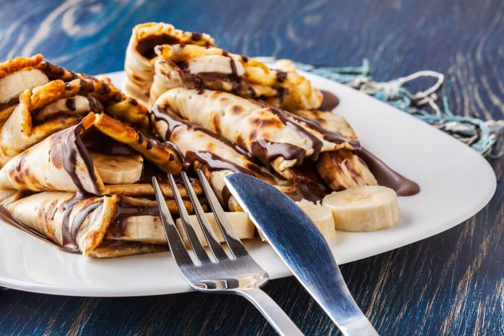

Pancakes

Description
A pancake is a thin, flat, circular piece of cooked batter made from milk, flour, and eggs. Pancakes are often rolled up or folded and eaten hot with a sweet or savoury filling inside.
ingredients
- 1 cup all-purpose flour, (spooned and leveled)
- 2 tablespoons sugar.
- 2 teaspoons baking powder.
- 1/2 teaspoon salt.
- 1 cup milk.
- 2 tablespoons unsalted butter, melted, or vegetable oil.
- 1 large egg.
- 1 tablespoon vegetable oil.
- In a large bowl, mix flour, sugar, baking powder and salt. Make a well in the center, and pour in milk, egg and oil. Mix until smooth.
- Heat a lightly oiled griddle or frying pan over medium high heat. Pour or scoop the batter onto the griddle, using approximately 1/4 cup for each pancake. Brown on both sides and serve hot.
- Enjoy